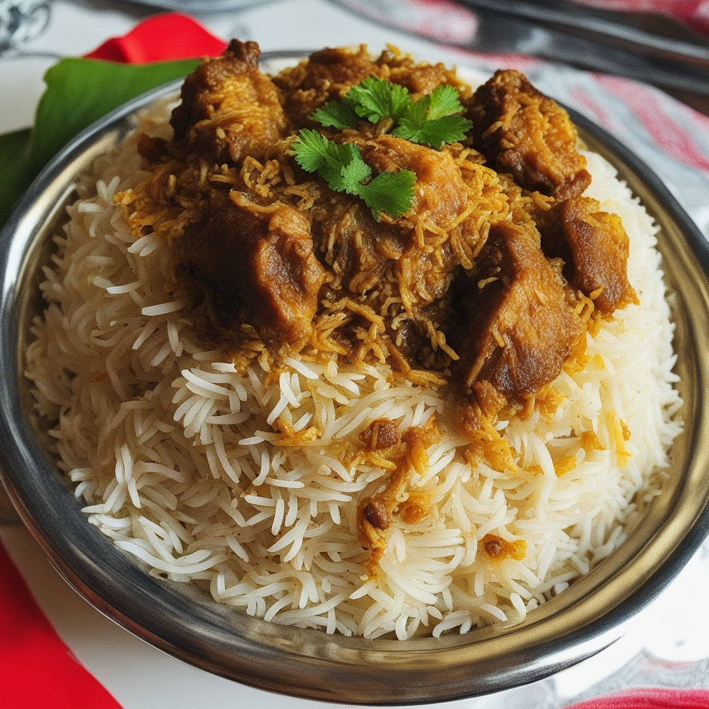

Back
Mutton Biryani Recipe

Ingredients:
Mutton - 500g, cut into pieces
Basmati Rice - 2 cups
Onion - 3 large, thinly sliced
Tomato - 2 medium, chopped
Ginger-Garlic Paste - 2 tbsp
Yogurt - 1 cup
Mint Leaves - 1/2 cup, chopped
Cilantro Leaves - 1/2 cup, chopped
Ghee - 1/4 cup
Oil - 2 tbsp
Whole Spices (Bay Leaf, Cardamom, Cinnamon, Cloves) - as needed
Green Chilies - 4, slit
Red Chili Powder - 1 tsp
Turmeric Powder - 1/2 tsp
Biryani Masala - 2 tbsp
Salt - to taste
Saffron Strands - a few, soaked in warm milk
Cooking Instructions:
Soak basmati rice in water for 30 minutes.
Heat ghee and oil in a pan, add whole spices and sauté.
Add onions and sauté until golden brown.
Add ginger-garlic paste, green chilies, and sauté for 2 minutes.
Add tomatoes, mint leaves, cilantro leaves, yogurt, and cook until oil separates.
Add mutton pieces, red chili powder, turmeric powder, biryani masala, and salt. Cook until the mutton is tender.
In a separate pot, boil water and cook the soaked rice until 70% done.
Layer the cooked mutton and rice alternatively in a pot.
Top with saffron-infused milk and cover tightly. Cook on low heat for 20 minutes.
Mutton Biryani is ready to serve. Enjoy it hot with raita!
Cooking Time: Approximately 1 hour
Serves: 4-6 people